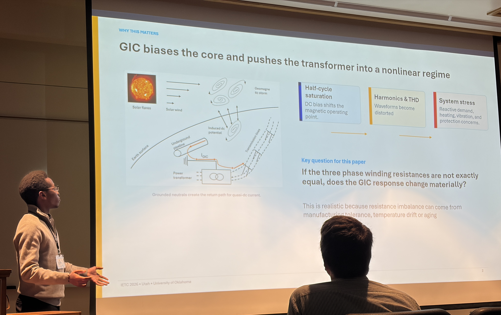
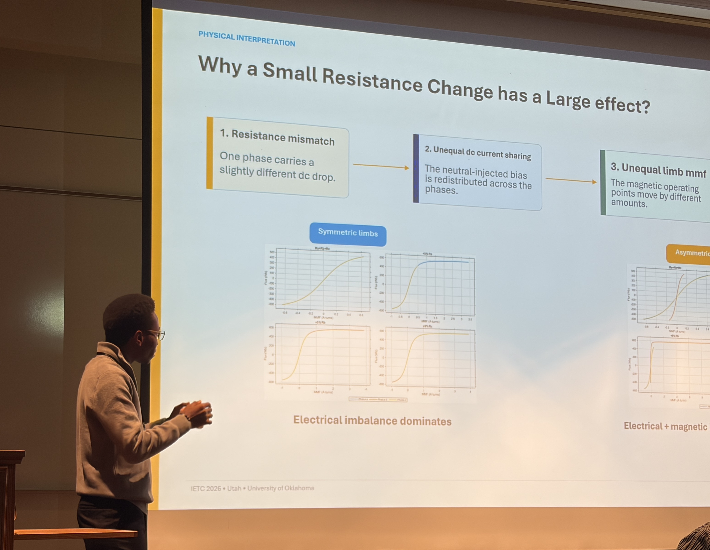
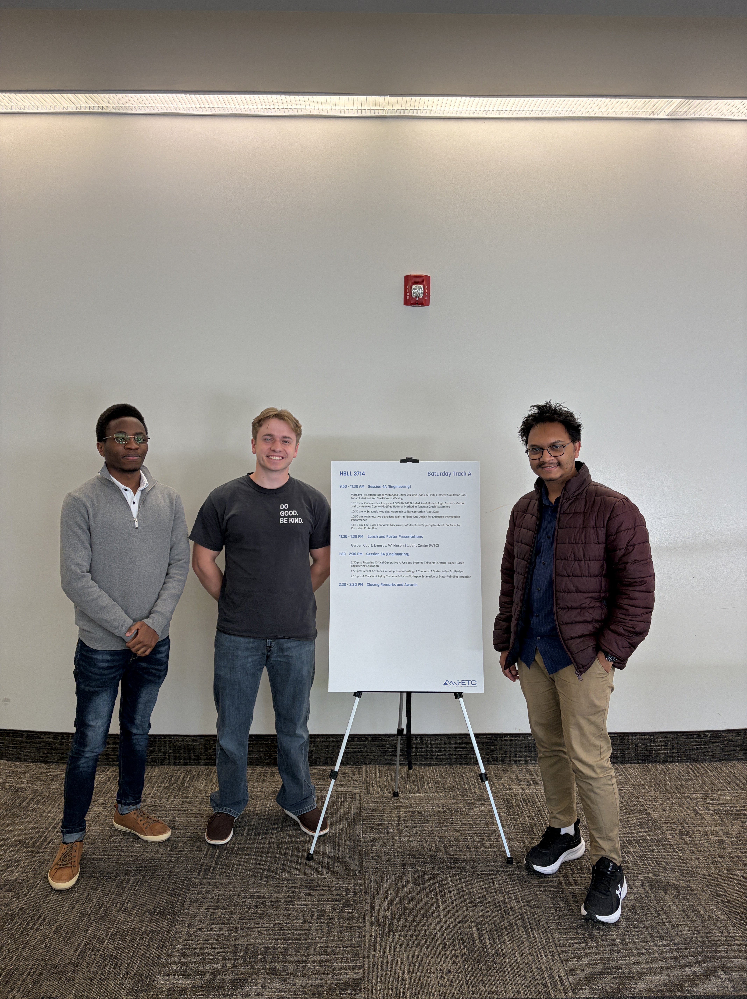

Doctoral student Julien Aganze presented two papers at the 2026 IEEE Intermountain Engineering, Technology & Computing Conference (i-ETC) in Utah, showcasing research on dynamical electromagnetic phenomena and insulation aging in modern power systems.
His first presentation, “GIC Modeling for a Three-Phase, Three-Limb Transformer: Line-Resistance Sensitivity,” examined how small differences in phase resistance can significantly influence transformer harmonic distortion under geomagnetically induced current (GIC) conditions.
Julien also presented a second paper on behalf of fellow doctoral student Srijana Shrestha titled “A Review of Aging Characteristics and Lifespan Estimation of Stator Winding Insulation.” The work explored insulation degradation mechanisms and lifespan prediction models for grid-interactive HVAC systems powered by variable frequency drives.
The conference provided an excellent opportunity to share ongoing research, exchange ideas with researchers from across the field, and represent the School of Electrical and Computer Engineering and University of Oklahoma on an international stage.


